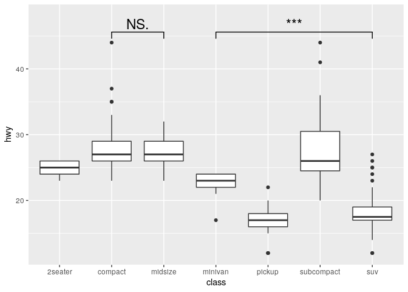
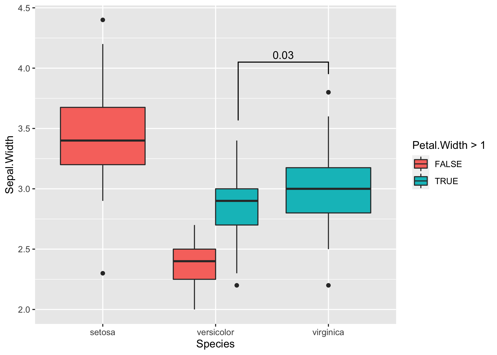
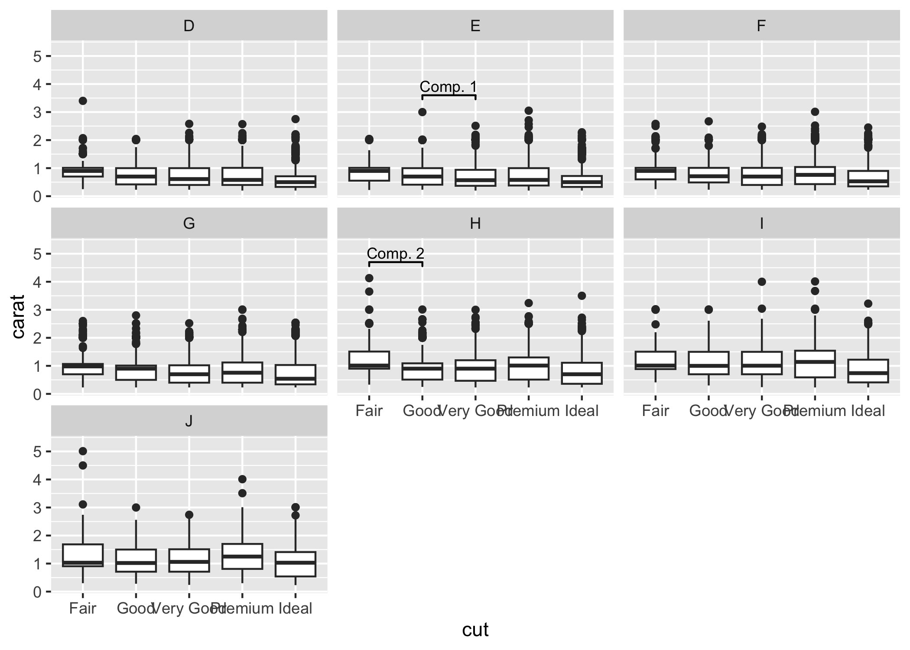

Description
This package provides an easy way to indicate if two groups are significantly different. Commonly this is shown by a bar on top connecting the groups of interest which itself is annotated with the level of significance (NS, *, **, ***). The package provides a single layer (geom_signif) that takes the groups for comparison and the test (t.test, wilcox etc.) and adds the annotation to the plot.
Example
Install package
Plot significance

Setting the precise location
This is important if you use position="dodge", because in that case I cannot calculate the correct position of the bars automatically.
# Calculate annotation
anno <- t.test(
iris[iris$Petal.Width > 1 & iris$Species == "versicolor", "Sepal.Width"],
iris[iris$Species == "virginica", "Sepal.Width"]
)$p.value
# Make plot with custom x and y position of the bracket
ggplot(iris, aes(x = Species, y = Sepal.Width, fill = Petal.Width > 1)) +
geom_boxplot(position = "dodge") +
geom_signif(
annotation = formatC(anno, digits = 1),
y_position = 4.05, xmin = 2.2, xmax = 3,
tip_length = c(0.2, 0.04)
)

Advanced Example
Sometimes one needs to have a very fine tuned ability to set the location of the the significance bars in combination with facet_wrap or facet_grid. In those cases it you can set the flag manual=TRUE and provide the annotations as a data.frame:
annotation_df <- data.frame(
color = c("E", "H"),
start = c("Good", "Fair"),
end = c("Very Good", "Good"),
y = c(3.6, 4.7),
label = c("Comp. 1", "Comp. 2")
)
annotation_df
#> color start end y label
#> 1 E Good Very Good 3.6 Comp. 1
#> 2 H Fair Good 4.7 Comp. 2
ggplot(diamonds, aes(x = cut, y = carat)) +
geom_boxplot() +
geom_signif(
data = annotation_df,
aes(xmin = start, xmax = end, annotations = label, y_position = y),
textsize = 3, vjust = -0.2,
manual = TRUE
) +
facet_wrap(~color) +
ylim(NA, 5.3)

You can ignore the warning about the missing aesthetics.
For further details go the CRAN page and check the examples in the vignette.
Maintenance
This package is provided as is and I currently don’t have any plans and the capacity to add any new features to it. If there is nonetheless a feature which you would like to see in the package, you are always welcome to submit pull request, which I will try to address as soon as possible.